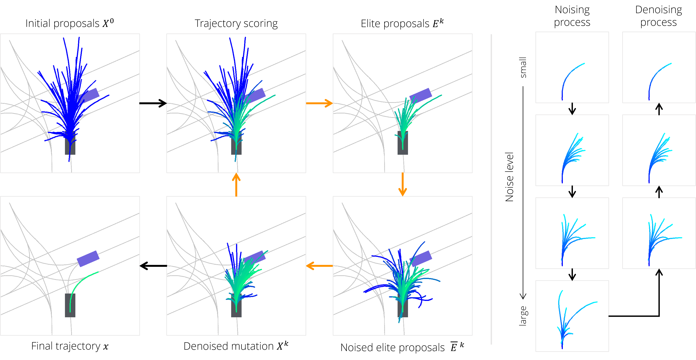
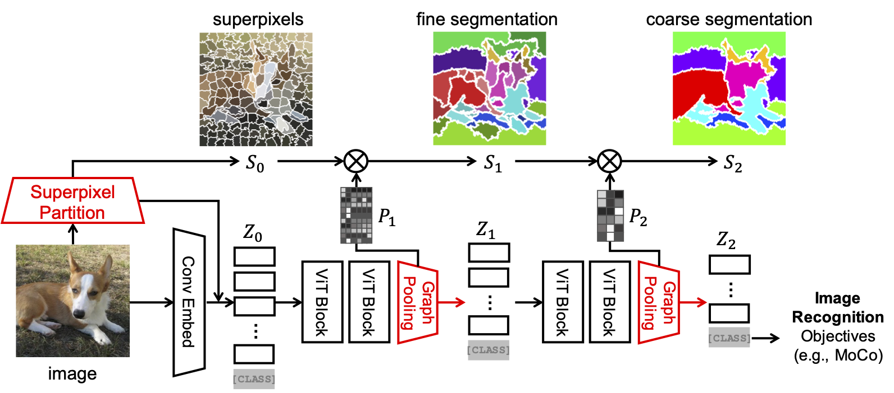
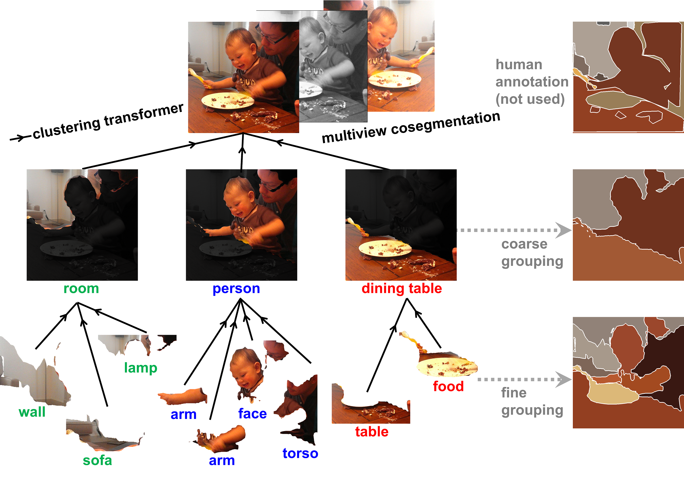
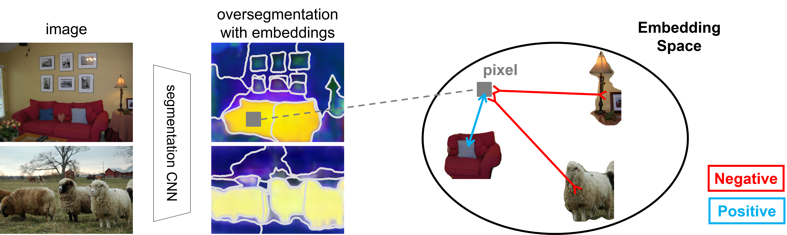

Research
I am interested in the trio of action, perception, and cognition. More particularly, I have been hoping to build machines that perceives to recognize the real world, understands the (physical) outcomes of their actions, explores novel complex behaviors, and learns/plans to achieve goals. I am fascinated by the animal beings that generalize and explore so successfully (see Moravec's Paradox).Publications




